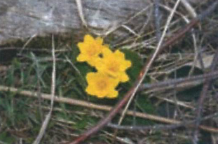

Touch the "soaking math quote of organic soil that reaches deeper Then the height of the house. Over the time, the accumulation of partially decomposed vegetation in this former streambed has become  saturated peat. These black spruce trees, with their spreading "pancake roots" maintain a precarious stability in these spongy soils.
Run your hand over the carpet of feather mosses. In spring, sun-colored marsh marigolds brighten this backdrop. Look for the tall white bog-orchid. Your field guide will help you to identify the other plants amidst horsetails, grasses and sedges.
Leaving the boardwalk, you will again be encircled by the familiar pines. Listen carefully for a faint "tapping" of a foraging downy or hairy woodpecker.
Your next stop will reveal this trail's namesake!